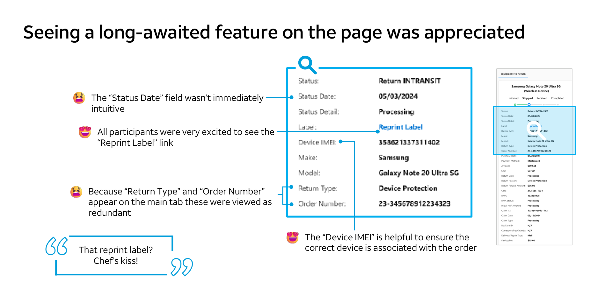
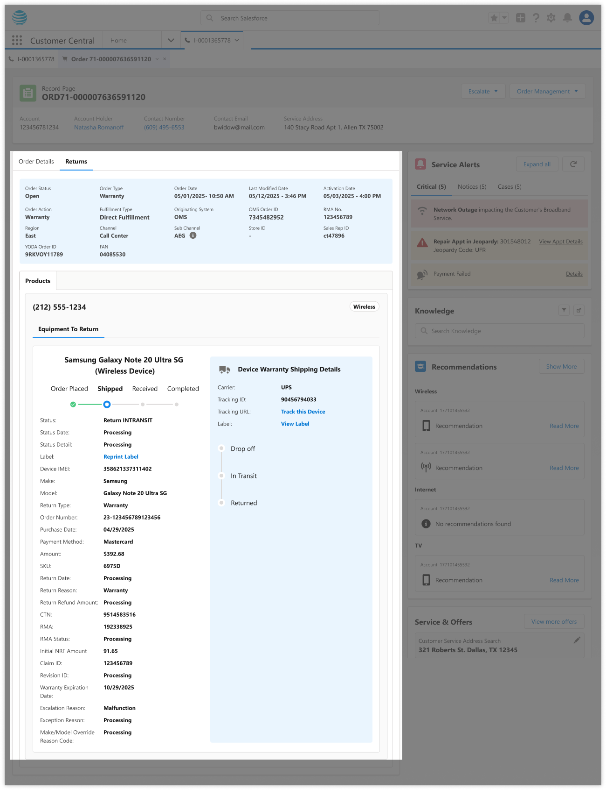
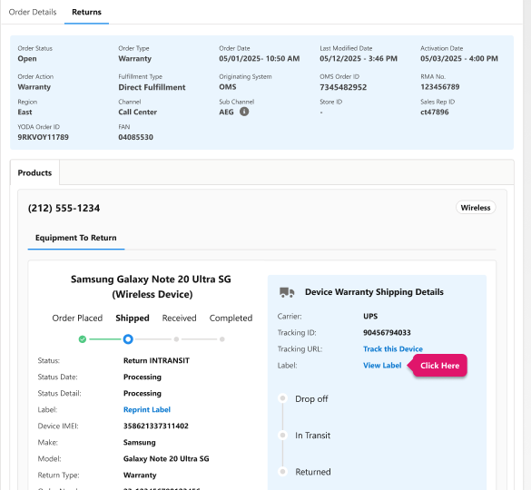
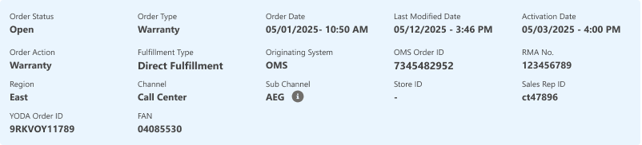

Device Return
Journey
Six return programs, seven backend systems, one agent trying to answer a customer's question. I owned UX for device returns across call-center desktop and in-store tablet, and initiated the research that proved a reframe was the right call.
The Problem
Frontline experts had no single, return-type aware view of a wireless return. The interface that existed answered a different question than the one customers were asking.
Every return type looked identical in the interface, with raw backend values like cash-carry and DF/INBOUND left to interpret mid-call. This case study focuses on Device Protection and Warranty, the highest-friction returns.
The question underneath the problem
Every symptom traced back to one missing answer. I reframed the redesign around three questions, answered in order:
Does the customer still owe a device?
What evidence explains the current status?
What should the expert do next?
My Role & Approach
I owned the return experience for Device Protection and Warranty end to end, with day-to-day autonomy and light design-lead oversight.
An in-store handoff and a mailed exchange look identical to a customer but carry different obligations, so I wasn't willing to guess. I brought in the research team myself and scoped the study with researcher Angie DeFord.
Research I Initiated
Device Protection & Warranty Order Research — with UX Researcher Angie DeFord
What we heard, and what changed
| Signal | What experts did | Design response |
|---|---|---|
| Clear labels | Spotted an open insurance claim quickly once "Insurance" and "Device Protection" were visible | Kept program labels up front |
| Revisions | Past the first revision, could tell something changed but not why; fell back to call notes | Grouped related order revisions |
| Density | Called the return screen "overwhelming": density without hierarchy | Sectioned by scenario, not data source |
| Unowned fields | Nobody could explain "Refund Amount"; "Claim ID" was an Asurion-side identifier | Cut "Refund Amount" entirely |
| Load-bearing fields | Named RMA number one of the most useful fields, especially for lost equipment | RMA shown only on returns that have one |
"You have to section this stuff — you can't just have it as a list."
Research Participant, Device Protection Study
The Design Decision That Mattered Most
Organize the interface around customer responsibility, not backend structure.
Before: how the backend modeled it
After: what the expert needs
A store might accept a device and ship it to a warehouse later. The customer's obligation ended at handoff, so tracking detail after that point can't imply otherwise.
The tradeoff I had to resolve
Device Protection and Warranty close the moment a carrier scans pickup, but a generic tracker still implied "Received" was required.
Remove the shipment timeline for these journeys; it shows a milestone that isn't required.
Keep full shipment history; Drop Off and Returned events are what an expert needs in a dispute.
Both. A primary status uses each journey's real completion logic, and shipment evidence stays underneath for disputes.
Where I chose to hold the line
I pushed to pause raw Order Type/Action values like Modify.change… in Order History. I'd rather ship less and have every field mean something than ship more and make experts guess.

The Solution
Translate the backend into plain language
With content designer Laura Landgren, I turned raw fulfillment values into two labels experts could act on.
cash-carryCCshipDFIn-Store Return
- BRE type, receipt & transaction ID
- Device IMEI, serial, SKU, make/model
- Store location, return date & reason
- Refund amount & restocking fee
- No RMA shown — the handoff is already complete
Mail-In Return
- RMA number, status, creation date
- Return-by date & non-return fee
- CTN and shipment tracking
- Original order & payment detail
- Full RMA lifecycle, since the device is still in transit
Fix the navigation, not just the page
Added return/exchange visibility directly to the Equipment tab — the most-cited pain point in the study. Related order revisions were grouped so experts didn't reconstruct them manually.

The accountability/logistics split generalized without a second version of the model:
Make validation part of the process, not an afterthought
I proposed frontline validation as a formal checkpoint, so changes are caught while they're still cheap:
Grounded in Existing Research, Too
I cross-referenced my study with an existing AT&T persona framework I didn't run, a second, independent signal that consolidation was the right problem.
Consistent pattern: too many disconnected systems — every extra swivel erodes efficiency and confidence on a live call.
Collaboration
Return logic touched refunds, non-return fees and RMA deadlines, so I worked closely with business stakeholders to keep the interface honest, not just cleaner-looking.

Impact
Validated — Frontline Review
Before a line of it was built, frontline reviewers evaluated the redesigned Figma directly:
"Will SAVE so much time trying to find returns."
Frontline Expert, Design ReviewModeled — Business Case
A projected 203-second cut per Device Return contact across 3.6M+ annual calls. The full model is below.
- Experts called the new flow easier to navigate and expected it to meaningfully cut click time, especially for new hires.
- Several asked to join the eventual pilot — an informal but strong vote of confidence.
- Conditional field display fixed the confusion research surfaced: no RMA info on returns without one, and the unexplained "Refund Amount" field cut entirely.
Two internal dollar-benefit estimates existed for the broader returns initiative this work supported ($20M and $6M annually, tied to different scoping assumptions); as of my last review, neither had been finance-vetted, so I'm not quoting either as a personal result here.
A moderate handle-time reduction applied to the full Device Return call volume. Projected from the business case, not measured after launch.
Reflection
Bringing in research wasn't process for its own sake — I didn't trust my own assumptions about what "overwhelming" meant to someone who reads this screen fifty times a day. And separating customer accountability from backend structure wasn't a stylistic choice — it was the one reframe that made every other decision on this project obvious. That's the judgment I want a team to trust me with on a messy, high-stakes system.